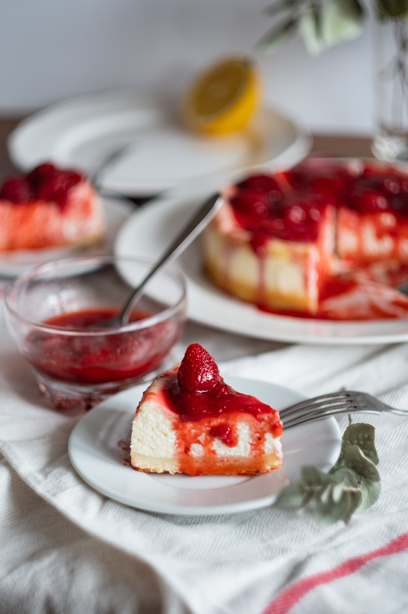

Sweet tooth
Punkin Pie
Total Time: 1 hr
Servings: 8
Author: Eagle brand

Ingredients
- (15 ounce) can pumpkin puree
- 1 (14 ounce) can Eagle Brand Sweetened Condensed Milk
- 2 large eggs
- 1 teaspoon ground cinnamon
- ½ teaspoon ground ginger
- ½ teaspoon ground nutmeg
- ½ teaspoon salt
- 1 (9 inch) unbaked pie crust
Directions
-
Gather all ingredients and preheat the oven to 425 degrees F
(220 degrees C).
-
Whisk pumpkin puree, condensed milk, eggs, cinnamon, ginger,
nutmeg, and salt together in a medium bowl until smooth.
- Pour into crust.
- Bake in the preheated oven for 15 minutes.
-
Reduce oven temperature to 350 degrees F (175 degrees C) and
continue baking until a knife inserted 1 inch from the crust
comes out clean, 35 to 40 minutes. Let cool before serving.
- Enjoy!
Chocolate Chip Cookies
Total Time 30 min
Servings: 36 cookies
Author: Eagle brand

Ingredients
- 1 cup salted butter softened
- 1 cup granulated sugar
- 1 cup light brown sugar packed
- 2 teaspoons pure vanilla extract
- 2 large eggs
- 3 cups all-purpose flour
- 1 teaspoon baking soda
- ½ teaspoon baking powder
- 1 teaspoon sea salt
- 2 cups chocolate chips (14 oz)
Directions
-
Preheat oven to 375 degrees F. Line three baking sheets with
parchment paper and set aside.
-
In a medium bowl mix flour, baking soda, baking powder and salt.
Set aside.
-
In a medium bowl mix flour, baking soda, baking powder and
salt. Set aside.
- Beat in eggs and vanilla until light (about 1 minute).
- Mix in the dry ingredients until combined..
- Add chocolate chips and mix well.
-
Roll 2-3 Tablespoons (depending on how large you like your
cookies) of dough at a time into balls and place them evenly
spaced on your prepared cookie sheets
-
Bake in preheated oven for approximately 8-10 minutes. Take
them out when they are just barely starting to turn brown.
-
Let them sit on the baking pan for 2 minutes before removing
to cooling rack.
Strawberry Shortcake Cheesecake
Total Time 2 HOURS 40 MINUTES
Servings: 16
Author: Eagle brand

Ingredients
For the Vanilla Butter Cake
- 1 cup butter
- 1/3 cups sugar
- 2 eggs
- 2 tsp vanilla extract
- 2 cups cake flour
- 2 1/2 tsp tsp baking powder
- 2/3 cup whole milk
For the cheesecake batter
- 3 eight ounce packages ounces cream cheese, (3 cups)
- 1 cup sugar
- 3 eggs
- 3 tsp vanilla extract
- 3/4 cup whipping cream, (35% cream, un-whipped)
For the strawberry filling
-
2 tsp unflavoured gelatin powder, stirred into 1/4 cup
cold water
- 5 cups sliced strawberries, Divided in 2 halves
-
3/4 cup sugar, use up to 1 1/4 cups if you prefer it sweeter
- 1/4 cup water
- 2 tbsp corn starch, dissolved in 1/4 cup water
For the Vanilla Whipped Cream
- 1 cup whipping cream
- 2 tbsp icing sugar, powdered sugar
- 1 tsp vanilla extract
Directions
To prepare the Vanilla Butter Cake
-
Grease and flour a 9 inch springform pan. Line the bottom with
parchment paper for easier release from the pan.
-
Cream together the butter and sugar very well until light and
fluffy.
-
Add the eggs, one at a time, beating well after each addition
until light and fluffy.
- Add the vanilla extract.
- Sift together the cake flour and baking powder.
-
Fold dry ingredients into the creamed mixture alternately with
the milk, beginning and ending with the dry ingredients.
-
Bake at 325 degrees F for about 35 - 40 minutes. Rely on the
toothpick test to ensure that it is properly baked.
-
Let the cake cool in the pan for 10 minutes, then release the
cake from the pan and let it cool on a wire rack until
completely cooled
To prepare the cheesecake batter
-
Line the bottom of a 9 inch springform pan with a layer or two
of parchment paper. I like to lay the squares of parchment
paper over the bottom section, then clip on the side section
and trim the excess paper from the bottom. This helps keep
the pan from leaking. out a little of the batter.
-
Wrap the outside of the pan with a couple of layers of
aluminum foil. This buffers the heat and allows for slow even
baking and a more creamy cheesecake.
-
Cream together the cream cheese and sugar for 2 to 3 minutes
until well combined.
-
Add the eggs, one at a time, beating well after each addition.
- Beat in the vanilla extract.
-
Finally blend in the whipping cream well until the batter is
very smooth. Using a rubber bowl scraper/spatula, scrape the
bottom and the sides of the bowl as well as the electric
beaters/paddle and give the batter a final beating for 1
minute on a higher speed. This final step ensures that there
are no lumps in the batter and introduces a little air into the
cheesecake to make it lighter.
Baking the cheesecake
-
Pour into the prepared pan and bake at 300 degrees F for
60-70 minutes. (Oven temperatures will vary slightly. Mine
takes the full 70 minutes and you can go to 75 if you feel you
need to.)
-
Don't be an compulsive oven door opener! Don't open it at all
in the first hour.
-
The cheesecake does not have to brown at all in order to be
fully baked; the surface of the cheesecake should lose any
shine when the cake is properly baked. It can still be slightly
wobbly just at the centre at this point.
-
Remove the cake from the oven and run a sharp knife completely
around the edge of the pan. This will allow for the cheesecake
to shrink as it cools and hopefully not crack.
-
Allow the cheesecake to cool thoroughly on a wire rack at room
temperature. (NOT in the fridge). Refrigerate after fully
cooled for several hours or overnight if possible.
To prepare the filling
-
Add the gelatin to the 1/4 cup cold water and set aside for a
few minutes until needed.
-
Add 2 1/2 cups of the sliced strawberries, the sugar and 1/4
cup water to a small saucepan and simmer for only a few minutes
until the strawberries have release most of their juice.
-
Dissolve the corn starch in the 1/4 cup of water and stir into
the simmering strawberries.
-
Stir constantly for 2 to three minutes while the strawberry
mixture thickens.
-
Remove from heat and stir in the gelatine mixture until it is
fully dissolved.
-
Allow to cool to almost room temperature before stirring in the
2 cups of fresh sliced berries.
To prepare the Vanilla Whipped Cream
-
Simply beat the whipping cream, icing sugar and vanilla extract
in the bowl of an electric mixer until firm peaks form.
To construct the cake
-
While the cheesecake layer is still in the pan, take the cake
base and place it evenly on top of the chilled cheesecake
layer.
-
Place the serving plate on top of the cake and invert the
entire thing.
-
Unclip the pan, remove the side section, then remove the bottom
section and carefully peel off the parchment paper.
-
Pipe a whipped cream border around the top of the cheesecake.
( this can be done with a large Ziploc bag with the corner
snipped off if you don't have a piping bag.)
-
Spoon the strawberry filling into the middle of the whipped
cream border. Chill for another couple of hours to let the
filling set. Garnish with fresh cut strawberries.